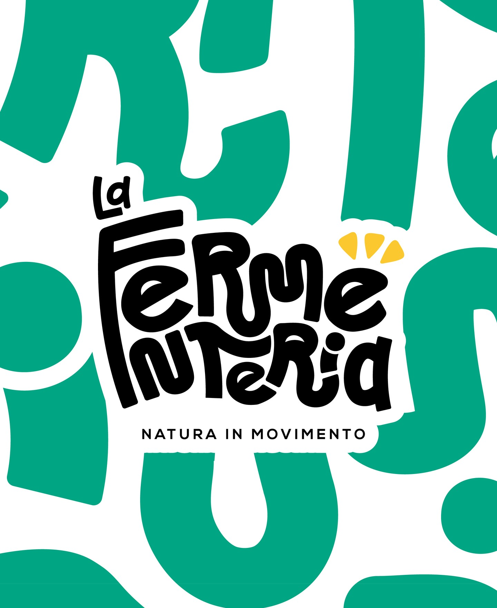
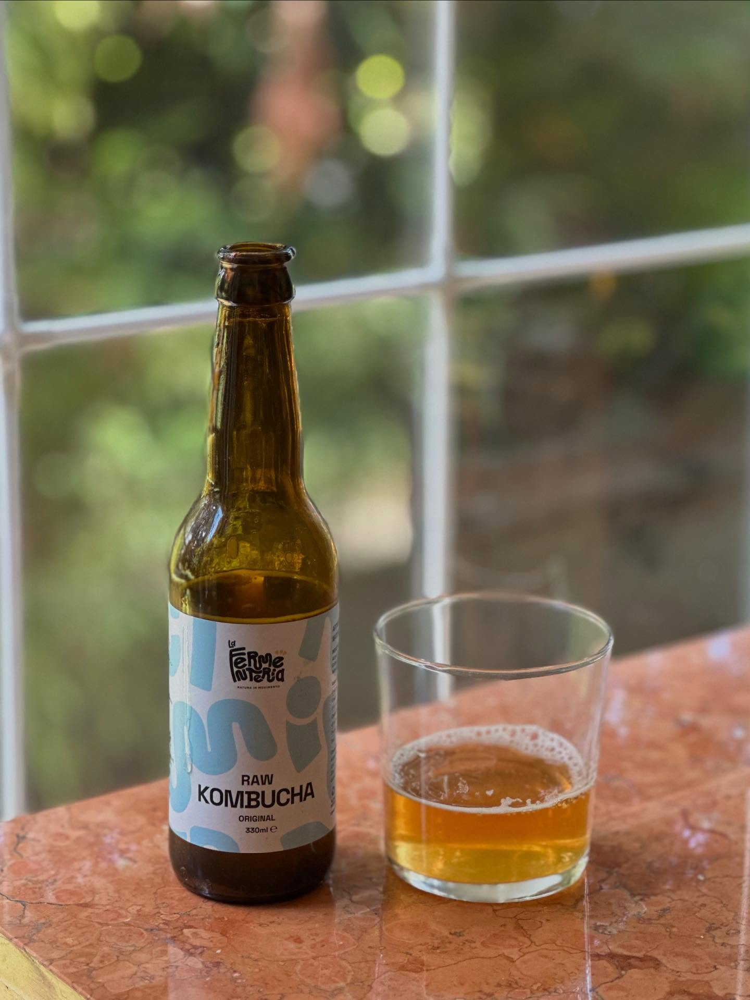
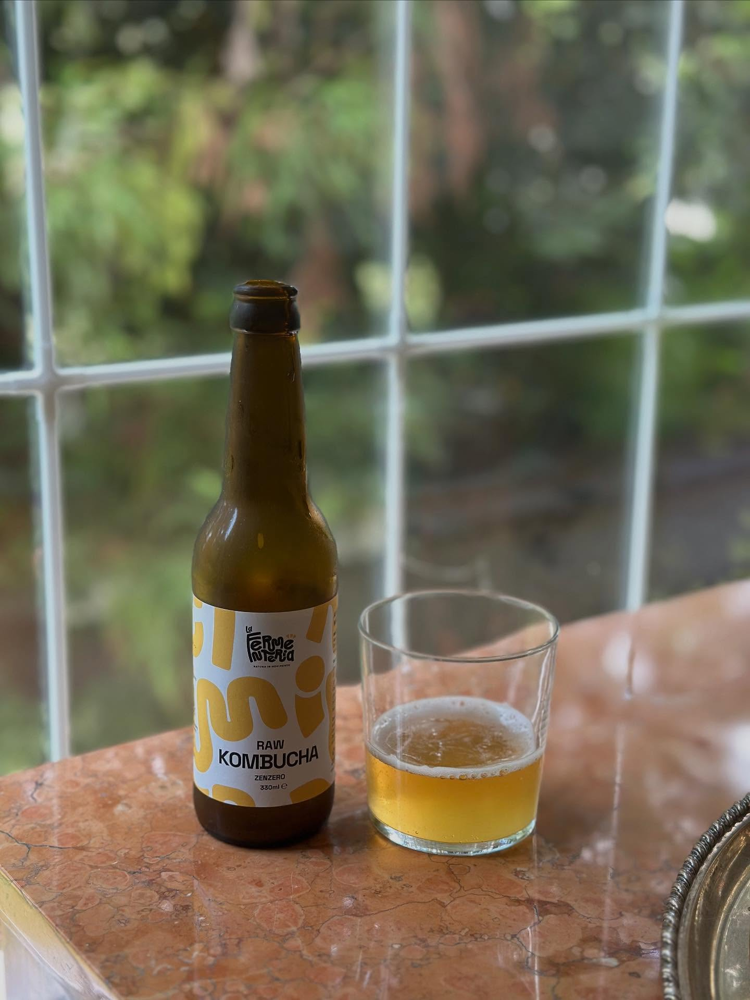
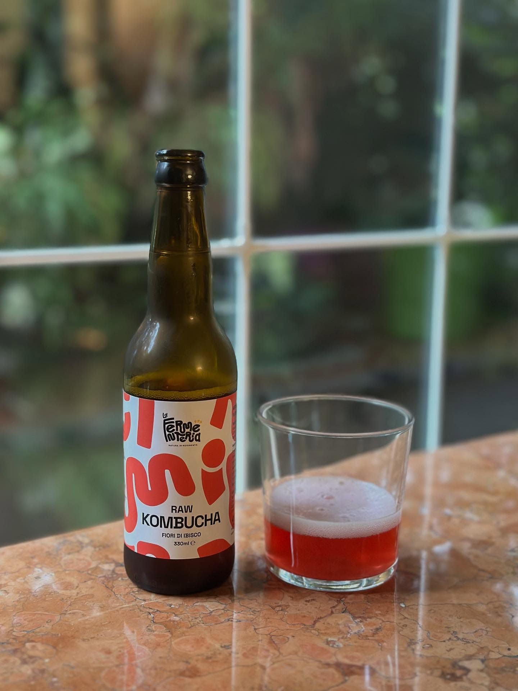
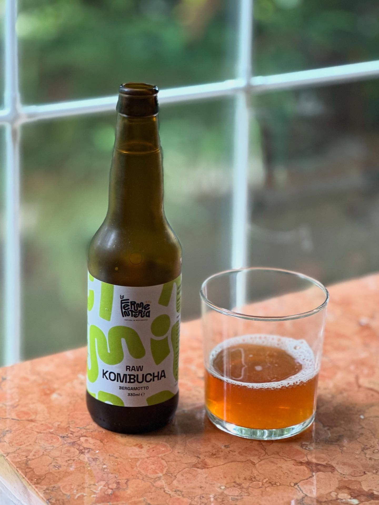
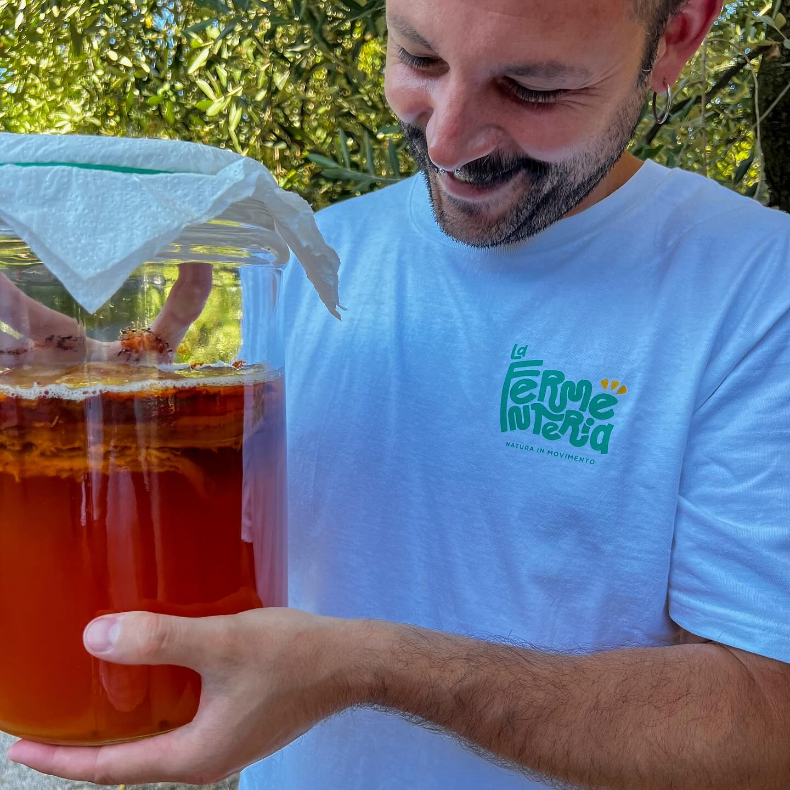

Fermentare è un atto
rivoluzionario.
Ciao a tutti! Sono Michele, il fermentatore seriale dietro "La Fermenteria". Laureato in Enologia, esploro la magia della kombucha e dei processi naturali.

Il nostro laboratorio artigianale
Siamo la prima azienda produttrice di Kombucha in Romagna. Un laboratorio dedicato a creare Kombucha autentica, non pastorizzata e rifermentata naturalmente in bottiglia. In un mondo dove tutto è pastorizzato, noi andiamo contro corrente!
Cultura della Salute
Insegno l'arte dell'autoproduzione per diffondere una salute consapevole e sostenibile.
Le Nostre Creazioni.
Autentiche, non pastorizzate, vive.
ORIGINAL
Lei, l'origine di tutto. Dove tutto è iniziato, dove ho perso l'anima per questo incredibile mondo delle fermentazioni; lei che mi ha fatto anche un po' dannare per trovare (e continuare a cercare!) il giusto equilibrio fra acidità, frizzantezza, delicatezza e corpo.
Lei, l'espressione di quello che per me è la Kombucha tradizionale ma in chiave moderna. Lei, che porta vita nei nostri intestini, ci tonifica nelle giornate più faticose o semplicemente ci dà la giusta frizzantezza per affrontare gli impegni quotidiani.
Sta bene da sola, quando si ha voglia di qualcosa da bere ma senza sapere bene cosa. Sta bene accanto a qualcosa da stuzzicare quando si ha voglia di un aperitivo senza pensieri, ma si trova a suo agio anche ad accompagnare piatti vegetali e orientali dando freschezza fra un boccone e l'altro. Lei, che ama molto anche la pizza! Insomma, sta bene un po' con tutto e un po' dappertutto!
ORIGINAL, 100% Te Verde Gunpowder, naturalmente rifermentata in bottiglia, non filtrata e non pastorizzata.
E tu l'hai mai provata la nostra Original?


ZENZERO
Lei, la seconda nata, quella che ti disseta nelle calde giornate estive e ti fa immaginare l'estate nelle lunghe giornate invernali. Briosa e piccantina, ogni sorso ne richiama un altro.
Il Tè verde Gunpowder Special incontra il succo di zenzero estratto a freddo. Le proprietà tonico-digestive dello zenzero, aumentate dalla fermentazione, la rendono eccezionale per aprire o accompagner un pasto.
Questa Kombucha richiama un viaggio in oriente, dalle spezie indiane al Pad Thai, da un fantastico riso saltato al kimchi fino ad arrivare al sushi giapponese.
Lo zenzero, o lo ami o lo odi. Tu da che parte stai?
IBISCO
Lei, l'estrosa e l'appassionata, una combinazione vibrante che osa andare oltre il convenzionale. Di carattere spumoso e ribelle, incanta fin dal primo istante con la sua complessità floreale e minerale. Un percorso guidato dalla ricerca costante per esprimere tutto il proprio potenziale.
Il pregiato tè verde incontra un'intensa infusione di fiori di ibisco, regalando un colore profondo e sfumature uniche. Al naso svela un profilo inizialmente deciso, vinoso e ricco di sfumature lievitate che piano piano si aprono lasciando spazio a note fresche, floreali e sfumature pastello.
La bocca è spumosa, salata e piacevolmente salivante, evocando l'anima vibrante e beverina di un grande lambrusco, ma sostenuta da un'acidità spinta e da una lieve, pulita astringenza finale tipica del tè verde. Un sorso estroso nato per stupire e accompagnare piatti creativi.
Un'attrice convincente sul tappeto rosso delle fermentazioni naturali. Tu sei pronto a scoprirla?


BERGAMOTTO
Lei, l'eleganza imbottigliata, quella che trasforma un momento di pausa nel rituale perfetto. Sofisticata e profumata, evoca l'atmosfera regale di un salotto d'altri tempi pur rimanendo profondamente moderna e ribelle. Briosa e intensamente agrumata, ogni sorso chiama quello successivo.
Le note avvolgenti e profonde del tè Earl Grey incontrano la freschezza pungente del bergamotto, dando vita a un colore e a una densità unici che ricordano la rotondità dell'idromele.
La sua bocca spumosa, strutturata su un perfetto equilibrio tra acidità, sapidità e una lieve astringenza finale da tè nero, la rende eccezionale per ridefinire l'ora del tè o per accompagnare un pasto o un aperitivo estroso. Si trova a suo agio tra tramezzini sfiziosi e piccola pasticceria, regalando un finale pulito e piacevolmente amaricante.
Mancano solo i biscotti da inzuppare, al resto pensa lei. Tu hai già preparato la tazza?
Una festa di batteri buoni!
Immagina la fermentazione come una festa dove batteri buoni, lieviti e microrganismi selvaggi si danno il cinque per trasformare ingredienti semplici in opere d'arte gustative! Questo processo magico, oltre a creare sapori unici e irresistibili, porta anche una miriade di benefici per il nostro corpo e la nostra salute.
I prodotti fermentati sono come dei supereroi per la salute: ricchi di probiotici, enzimi e antiossidanti, sono un toccasana per il tuo sistema digestivo.
Fanno festa con il tuo palato, rinforzano in modo naturale il sistema immunitario e migliorano persino l'umore.
